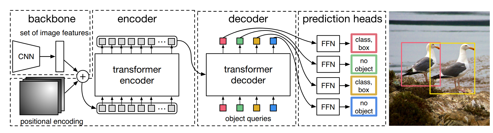

DETR 是 Facebook Research 在 2020 年提出的目标检测模型，首次将 Transformer 架构引入目标检测领域，摒弃了传统检测器中手工设计的 NMS、Anchor 等组件，实现了一个真正端到端的检测 pipeline。
一、DETR 的核心思想
传统目标检测器（Faster R-CNN、YOLO 等）依赖大量人工先验：anchor 设计、NMS 后处理、RoI 池化等。DETR 将这些组件全部替换为 Transformer + 集合预测，把目标检测建模成一个二分图匹配问题：
- Encoder 将图像特征编码为全局上下文
- Decoder 用 100 个可学习的 object queries 并行解码出 100 个检测结果
- 匈牙利算法 在预测集和 GT 集之间做 1 对 1 匹配
- 匹配上的预测计算分类 + 回归损失，未匹配的归为 "no object"

二、整体 Pipeline 流程
| Text Only |
|---|
1
2
3
4
5
6
7
8
9
10
11
12
13
14
15
16
17
18
19
20
21
22
23
24
25
26
27
28
29
30 | 输入图像 (PIL + COCO 标注)
│
├─ [1] 数据预处理 (Transforms)
│ ├─ RandomResize / RandomCrop / RandomFlip
│ ├─ ToTensor + Normalize
│ ├─ boxes: xyxy → cxcywh + 归一化到 [0, 1]
│ └─ batch padding + mask 生成
│
├─ [2] 模型前向 (DETR.forward)
│ ├─ Backbone (ResNet-50) → 特征图 [B, 2048, H/32, W/32]
│ ├─ Position Embedding (正弦编码) → [B, 256, H/32, W/32]
│ ├─ 1×1 Conv 降维 → [B, 256, H/32, W/32]
│ ├─ Transformer Encoder (6 层)
│ │ └─ Self-Attn + FFN, 输出 memory
│ ├─ Transformer Decoder (6 层)
│ │ └─ Self-Attn + Cross-Attn + FFN, 输出 [6, B, 100, 256]
│ ├─ class_embed: Linear(256, num_classes+1) → 分类 logits
│ └─ bbox_embed: MLP(256→256→4) → sigmoid → cxcywh ∈ [0,1]
│
├─ [3] 匈牙利匹配 (HungarianMatcher)
│ ├─ 代价矩阵: C = 5×L1_cost + 1×CLS_cost + 2×GIoU_cost
│ └─ scipy.linear_sum_assignment → 1 对 1 匹配
│
├─ [4] 损失计算 (SetCriterion)
│ ├─ L_ce: CrossEntropy(所有 100 个预测), no-object 类权重 0.1
│ ├─ L_bbox: L1 Loss (仅匹配上的预测)
│ ├─ L_giou: GIoU Loss (仅匹配上的预测)
│ └─ 辅助损失: 每层 decoder 独立匹配 + 计算
│
└─ [5] 反向传播 + 梯度裁剪 + AdamW 优化
|
三、数据预处理
数据从 COCO 格式到模型输入经历了以下转换：
3.1 标注格式转换 (ConvertCocoPolysToMask)
| Python |
|---|
| # COCO 原始 bbox: [x, y, w, h] (绝对坐标, 左上角+宽高)
# 转换后:
target = {
'boxes': [N, 4] # [x1, y1, x2, y2] 绝对坐标
'labels': [N] # category_id
'image_id': [1]
'orig_size': [H, W] # 原始图像尺寸
}
|
3.2 数据增强
训练时的 transforms 顺序：
| Python |
|---|
| T.RandomHorizontalFlip() # 50% 概率水平翻转
T.RandomSelect(
T.RandomResize(scales), # 50%: 仅缩放 (短边 ∈ [480,800], 长边 ≤ 1333)
T.Compose([ # 50%: 缩放+裁剪+缩放
T.RandomResize([400,500,600]),
T.RandomSizeCrop(384,600),
T.RandomResize(scales),
])
)
T.ToTensor() # PIL → Tensor [0,1]
T.Normalize(mean, std) # 标准化 + 关键转换↓↓↓
|
3.3 Normalize 中的关键操作
Normalize 在标准化图像的同时，完成了 boxes 的两次关键转换 (datasets/transforms.py:242):
| Python |
|---|
| boxes = box_xyxy_to_cxcywh(boxes) # [x1,y1,x2,y2] → [cx,cy,w,h]
boxes = boxes / [w, h, w, h] # 归一化到 [0,1]
|
这里 DETR 决定使用 (cx, cy, w, h) 归一化坐标 作为框的表示形式，且所有后续操作（匹配、损失、预测）都基于此格式。
3.4 Batch 组装
| Python |
|---|
| # collate_fn → nested_tensor_from_tensor_list
# 将不同尺寸的图像 pad 到 batch 中最大尺寸
# 生成 mask: True = 填充区域（需要忽略）
samples = NestedTensor(
tensor=[B, 3, H_max, W_max], # pad 后的图像
mask=[B, H_max, W_max] # 填充位置为 True
)
|
四、模型前向传播
4.1 Backbone + Position Encoding
| Python |
|---|
| features, pos = self.backbone(samples) # Joiner(Backbone, PositionEmbedding)
|
Backbone (ResNet-50):
- 使用 FrozenBatchNorm2d（固定 BN 统计量）
- IntermediateLayerGetter 截取 layer4 输出
- 输出特征图: [B, 2048, H/32, W/32]
- mask 也从原图插值到相同尺寸
PositionEmbeddingSine:
| Python |
|---|
| # 对每个位置计算行列累计值
y_embed = mask_not.cumsum(1) # 行方向累积
x_embed = mask_not.cumsum(2) # 列方向累积
# 不同频率的 sin/cos 编码
pos_x = sin/cos(x_embed / temperature^(2i/d))
pos_y = sin/cos(y_embed / temperature^(2i/d))
# 输出: [B, 256, H/32, W/32]
# y 方向 128 维 + x 方向 128 维 = 256 维
|
不使用 normalize=True 时对 mask 区域做归一化，使得位置编码对图像尺寸不变。
输入准备
| Python |
|---|
| src = self.input_proj(src) # Conv2d(2048, 256, 1×1)
src = src.flatten(2).permute(2,0,1) # [B,256,H,W] → [HW, B, 256]
pos = pos_embed.flatten(2).permute(2,0,1)
mask = mask.flatten(1) # [B, HW]
tgt = torch.zeros(100, B, 256) # object queries 初始化为零
|
Encoder (6 层)
每层的计算 (TransformerEncoderLayer.forward_post):
| Python |
|---|
| # 1. Self-Attention
q = k = src + pos # Query/Key 加上位置编码
attn_out = MultiheadAttention(q, k, value=src,
key_padding_mask=mask) # 屏蔽填充位置
src = LayerNorm(src + dropout(attn_out))
# 2. FFN
ffn_out = Linear2(ReLU(Dropout(Linear1(src)))) # 256→2048→256
src = LayerNorm(src + dropout(ffn_out))
|
输出 memory: [HW, B, 256] — 融合了全局上下文的图像特征。
Decoder (6 层)
数据流概览
Decoder 的输入包含四类张量，它们的角色和生命周期各不相同：
| Python |
|---|
| # Transformer.forward (transformer.py:47-58)
def forward(self, src, mask, query_embed, pos_embed):
bs, c, h, w = src.shape
memory = self.encoder(src, mask, pos_embed) # [HW, B, 256]
pos = pos_embed.flatten(2).permute(2, 0, 1) # [HW, B, 256]
query_pos = query_embed.unsqueeze(1).repeat(1, bs, 1) # [100, B, 256]
tgt = torch.zeros_like(query_pos) # [100, B, 256]
|
| 张量 |
Shape |
语义 |
来源 |
更新 |
memory |
[HW, B, 256] |
编码后的图像全局特征 |
Encoder 输出 |
否 |
pos |
[HW, B, 256] |
图像空间位置编码 |
正弦编码 |
否 |
query_pos |
[100, B, 256] |
可学习的 object query 身份 |
nn.Embedding(100, 256) |
否（前向不变；反向通过梯度更新参数） |
tgt |
[100, B, 256] |
querys 的内容表示 |
全零初始化 |
逐层更新 |
tgt 初始化为全零是因为每个 query 的"身份"（检索条件）完全由 query_pos 提供，"内容"（检索积累）随着每层从 memory 中提取信息而逐步填充。query_pos 在 6 层 decoder 中共享且不随层变化——它的作用是在每一层提供稳定的检索身份，其参数值通过反向传播在整个训练过程中逐步学习。
单层结构 (DecoderLayer)
每层按顺序包含三个子模块，各有不同的信息交互范围：
| Text Only |
|---|
| tgt [100, B, 256] ──── ① Self-Attention ──── Add & Norm ──┐
(query 内部表示) (query×query 交互) │
├── ② Cross-Attention ── Add & Norm ──┐
memory [HW, B, 256] ─────────────────────────────────────────┘ (query×image 交互) │
├── ③ FFN ── Add & Norm
query_pos ─────────────────────────────────────────────────────────────────────────────────────────────┘ (逐位置变换)
pos ─────────────────────────────────────────────────────────────────────────────────────────────┘
|
三种交互范围的本质区别：Self-Attention 在 query 集合内部做信息交换；Cross-Attention 在 query 与图像特征之间做跨模态检索；FFN 在每个 query 内部做非线性变换。
① Self-Attention — query 间交互
源码 :
| Python |
|---|
| q = k = tgt + query_pos # Q = K = 内容 + 身份
v = tgt # V = 纯内容
tgt2 = self.self_attn(q, k, v)[0]
tgt = LayerNorm(tgt + dropout(tgt2))
|
计算过程:
| Text Only |
|---|
| Attention(Q, K, V) = softmax( Q·K^T / √d_k ) · V
其中 Q, K ∈ R^{100×256}, Q·K^T ∈ R^{100×100}
|
- Score: 100×100 矩阵，
S[i][j] 表示 query_i 的 Q 与 query_j 的 K 的点积相似度
- Attention weights: 经 softmax 归一化后，
A[i][j] 是 query_i 对 query_j 的关注权重
- Output:
O[i] = Σ_j A[i][j] · V[j]，query_i 的输出是所有 query_j 的 V 的加权混合
设计意图: DETR 同时输出全部 100 个检测结果。Self-Attention 提供了 信息交互通道，使每个 query 在执行 Cross-Attention 之前能够感知其他 query 的状态，避免多个 query 聚焦同一目标区域——这等价于一种隐式的去重机制，替代了传统检测器中 NMS 后处理的功能。
② Cross-Attention — query 从图像特征中检索信息
源码:
| Python |
|---|
| tgt2 = self.multihead_attn(
query = tgt + query_pos, # Q: query 的意图
key = memory + pos, # K: 图像特征 + 空间位置
value = memory, # V: 纯视觉内容
key_padding_mask = mask # 屏蔽 padding 区域
)[0]
tgt = LayerNorm(tgt + dropout(tgt2))
|
计算过程:
| Text Only |
|---|
| Attention(Q, K, V) = softmax( Q·K^T / √d_k ) · V
Q ∈ R^{100×256}, K, V ∈ R^{HW×256}, Q·K^T ∈ R^{100×HW}
|
- Score: 100×HW 矩阵，
S[i][j] 表示 query_i 对图像位置 j 的匹配程度
- Attention weights: 经 softmax 后，每行对 HW 个位置形成概率分布
- Output:
O[i] = Σ_j A[i][j] · V[j]，query_i 的输出是对所有图像位置 V 的加权聚合
Q/K/V 的语义:
|
Q (query) |
K (key) |
V (value) |
| 组成 |
tgt + query_pos |
memory + pos |
memory |
| 角色 |
"我要检索什么" |
"我提供了什么可被检索的" |
"检索到后提取什么内容" |
| 位置信息 |
query_pos (可学习) |
pos (正弦编码) |
— |
一个关键设计: V 不加位置编码。原因是 attention 的输出将被用作 query 特征更新的增量，应当只包含视觉语义信息。若 V 混入 pos，则位置坐标会通过残差连接"污染"后续层的 query 表示。
与 Encoder Self-Attention 的对比:
| Text Only |
|---|
| Encoder Self-Attn: K = Q (同源), 交互范围: image ↔ image
Decoder Cross-Attn: K ≠ Q (异源), 交互范围: query ↔ image
|
③ FFN — 逐位置特征变换
源码:
| Python |
|---|
| tgt2 = Linear(2048)( ReLU( Dropout( Linear(256)(tgt) ) ) )
tgt = LayerNorm(tgt + dropout(tgt2))
|
两层全连接，隐层维度 2048。FFN 对 100 个 query 独立作用（参数共享但 query 间无交互），将 Cross-Attention 聚合到的跨模态信息做非线性变换和特征整合。
残差结构
每层的三个子模块均采用 Pre-Norm 或 Post-Norm 的残差连接模式。以 Post-Norm（DETR 默认）为例：
| Text Only |
|---|
| output = LayerNorm( input + Dropout( SubLayer(input) ) )
|
残差连接为梯度提供了不经注意力和 FFN 变换的直通路径，使 6 层堆叠在训练中不会出现梯度消失。
6 层堆叠与中间监督
| Python |
|---|
| # TransformerDecoder.forward (transformer.py:95-123)
output = tgt # [100, B, 256] 全零
intermediate = []
for layer in self.layers: # 6 个参数独立的 DecoderLayer
output = layer(output, memory, pos=pos, query_pos=query_pos)
if self.return_intermediate:
intermediate.append(self.norm(output))
hs = torch.stack(intermediate) # [6, 100, B, 256]
|
return_intermediate=True 时返回全部 6 层的输出。最后一层作为主预测，前 5 层作为辅助输出（aux_outputs），每层独立进行匈牙利匹配并计算相同的监督损失，实现深层监督（deep supervision），加速训练收敛。
query 演化的阶段性特征
6 层 Decoder 堆叠的效果可以从 query 表示的演化来理解：
| Text Only |
|---|
1
2
3
4
5
6
7
8
9
10
11
12 | Layer 0: tgt = 0, Cross-Attn 初次从 memory 中检索
→ 形成对物体位置的初步感知（粗糙的热力图）
Layer 1: Self-Attn 开始形成差异化（query 之间协商分工）
→ Cross-Attn 聚焦更精确，query 表示开始分化
Layers 2-4: Self-Attn 维持分工一致性
→ Cross-Attn 进一步细化定位
→ FFN 逐步提取出对分类和回归有用的特征
Layer 5: query 表示达到最终质量
→ 可直接由 class_embed / bbox_embed 映射为检测结果
|
DETR Decoder 不使用 tgt_mask（因果注意力掩码）。这意味着:
| Text Only |
|---|
| 自回归 (GPT 等): DETR:
tgt_mask
q₀ ← q₀ [1,0,0] q₀ ─┐
q₁ ← q₀,q₁ [1,1,0] q₁ ─┤
q₂ ← q₀,q₁,q₂ [1,1,1] q₂ ─┼── 全部并行，双向可见
... ... │
q₉₉ ─┘
|
100 个 query 同时、并行、完全可见，不依赖时序顺序。这使得 DETR 无需自回归地逐个生成检测结果，一次前向即可得到全部预测。
Self-Attention 的隐式去重机制
传统检测器依赖 NMS 抑制冗余框，而 DETR 中这一功能由 Self-Attention 隐式完成。Self-Attention 使 query_i 能够感知 query_j 的当前状态——包括其 query_pos 提供的位置偏好和 tgt 中积累的语义信息——从而主动调节自身行为以避免重叠。这一机制的有效性不需要额外的损失项来保证：匈牙利匹配的 1-to-1 分配压力自然促使 query 之间形成差异化。
4.3 预测头
Decoder 输出的 100 个 256 维向量已经包含了所有需要的检测信息。现在只需要两个线性层将它翻译成"类别"和"坐标"。
| Python |
|---|
| hs = hs.transpose(1, 2) # [6, B, 100, 256]
# 分类头: 每个 query 预测 num_classes+1 个类
# 最后一个是 "no object" 类
outputs_class = self.class_embed(hs) # Linear(256, num_classes+1)
# → [6, B, 100, num_classes+1]
# 框回归头: 3层 MLP, 输出 sigmoid 确保在 [0,1]
outputs_coord = self.bbox_embed(hs).sigmoid()
# → [6, B, 100, 4] (cx, cy, w, h)
|
| Python |
|---|
| out = {
'pred_logits': outputs_class[-1], # 最后一层 → 主输出
'pred_boxes': outputs_coord[-1],
}
if aux_loss:
out['aux_outputs'] = [ # 前 5 层 → 辅助输出
{'pred_logits': ..., 'pred_boxes': ...} for i in range(5)
]
|
五、匈牙利匹配
DETR 的核心创新之一：用二分图最优匹配替代 anchor → IoU → NMS 的手工流程。
5.1 代价矩阵构建
| Python |
|---|
| # 展平 batch 维度方便计算
out_prob = outputs["pred_logits"].flatten(0,1).softmax(-1) # [B×100, num_classes+1]
out_bbox = outputs["pred_boxes"].flatten(0,1) # [B×100, 4]
tgt_ids = concat(targets["labels"]) # [total_gt]
tgt_bbox = concat(targets["boxes"]) # [total_gt, 4]
|
三种代价:
| 代价 |
公式 |
含义 |
| 分类代价 |
C_cls = -out_prob[:, tgt_ids] |
预测越确信真实类，代价越小 |
| L1 代价 |
C_bbox = ∥out_bbox - tgt_bbox∥₁ |
框坐标的 L1 距离 |
| GIoU 代价 |
C_giou = -GIoU(out, tgt) |
框重叠度（GIoU 越高代价越小） |
| Python |
|---|
| C = 5 × C_bbox + 1 × C_cls + 2 × C_giou # 默认权重
|
5.2 最优匹配
| Python |
|---|
| # 对每张图片独立求解
C = C.view(B, 100, -1) # 恢复 batch 维度
sizes = [len(t["boxes"]) for t in targets]
indices = [linear_sum_assignment(c[i]) # scipy 匈牙利算法
for i, c in enumerate(C.split(sizes, -1))]
# 返回: [(pred_idx, tgt_idx), ...] 每个元素对应一张图的匹配对
|
匈牙利算法保证找到全局代价最小的二分图匹配，复杂度 O(n³)。
六、损失计算
6.1 总损失公式
| Text Only |
|---|
| L_total = λ_ce × L_ce + λ_bbox × L_bbox + λ_giou × L_giou
= 1 × L_ce + 5 × L_bbox + 2 × L_giou
|
6.2 分类损失 (loss_labels)
| Python |
|---|
| # 构建 target: 所有 100 个预测初始化为 no-object 类
target_classes = torch.full((B, 100), num_classes) # 全部 = no-object
# 匹配到的位置填入真实类别
idx = (batch_idx, src_idx) # 提取匹配到的预测索引
target_classes[idx] = matched_target_classes
# CrossEntropy 作用于全部 100 个预测
loss_ce = CrossEntropy(pred_logits, target_classes, weight=empty_weight)
|
no-object 权重处理: empty_weight[-1] = eos_coef = 0.1
因为负样本远多于正样本（100 个预测中通常只有几个匹配到），给 no-object 类降权防止分类器过于偏向预测背景。
6.3 框回归损失 (loss_boxes)
| Python |
|---|
| # 只取匹配到的预测
src_boxes = pred_boxes[idx] # [num_matched, 4]
tgt_boxes = concat(tgt_boxes[idx]) # [num_matched, 4]
# L1 回归损失
loss_bbox = L1Loss(src_boxes, tgt_boxes).sum() / num_boxes
# GIoU 损失 (1 - GIoU 的均值)
# 先转回 xyxy 格式才能计算 GIoU
loss_giou = (1 - GIoU(cxcywh→xyxy(src_boxes),
cxcywh→xyxy(tgt_boxes)).diag()).sum() / num_boxes
|
num_boxes 归一化: 分布式训练时所有 GPU 的 GT 数量 all_reduce 后取平均，确保每张卡梯度尺度一致。
6.4 辅助损失 (Auxiliary Loss)
| Python |
|---|
| if 'aux_outputs' in outputs:
for i, aux in enumerate(outputs['aux_outputs']): # 遍历前 5 层
indices = self.matcher(aux, targets) # 每层独立匹配!
# 计算相同损失，key 加后缀 _0, _1, _2, _3, _4
|
| 属性 |
主损失 |
辅助损失 |
| 数据来源 |
Decoder 最后一层 |
Decoder 前 5 层 |
| 匹配方式 |
匈牙利匹配 |
每层独立匹配 |
| 权重 |
λ (1/5/2) |
相同权重 |
| 作用 |
最终输出监督 |
加速收敛, 深层监督 |
七、训练流程
7.1 一次训练迭代
| Python |
|---|
1
2
3
4
5
6
7
8
9
10
11
12
13 | # engine.py: train_one_epoch
for samples, targets in data_loader:
samples = samples.to(device)
targets = [{k: v.to(device) for k, v in t.items()} for t in targets]
outputs = model(samples) # 前向
loss_dict = criterion(outputs, targets) # 损失
losses = sum(loss_dict[k] * weight_dict[k]) # 加权求和
losses.backward() # 反向
clip_grad_norm_(model.parameters(), max_norm=0.1) # 梯度裁剪
optimizer.step() # 参数更新
|
7.2 训练配置速查
| 超参数 |
值 |
说明 |
| 优化器 |
AdamW |
lr=1e-4, backbone lr=1e-5 |
| 权重衰减 |
1e-4 |
|
| 梯度裁剪 |
0.1 |
max_norm |
| LR 调度 |
StepLR |
epoch 200 衰减 |
| 总 epochs |
300 |
|
| Batch size |
2 (默认) |
单卡 |
| num_queries |
100 |
每次最多检测 100 个物体 |
| d_model |
256 |
Transformer 隐层维度 |
| Encoder 层数 |
6 |
|
| Decoder 层数 |
6 |
|
| 注意力头数 |
8 |
|
| FFN 隐层 |
2048 |
|
| dropout |
0.1 |
|
八、维度变化速查表
| 阶段 |
张量形状 |
说明 |
| 原始图像 |
[H, W, 3] |
PIL Image |
| 预处理后 |
[B, 3, H_pad, W_pad] |
pad 到同尺寸 |
| Backbone 输出 |
[B, 2048, H/32, W/32] |
ResNet-50 layer4 |
| input_proj 后 |
[B, 256, H/32, W/32] |
1×1 conv 降维 |
| Encoder 输入 |
[H/32×W/32, B, 256] |
展平为序列 |
| Position Embedding |
[B, 256, H/32, W/32] |
sin/cos 编码 |
| Query Embedding |
[100, B, 256] |
可学习的 N 个查询 |
| Decoder 输出 |
[6, B, 100, 256] |
6 层全部输出 |
| pred_logits |
[6, B, 100, num_classes+1] |
含 no-object 类 |
| pred_boxes |
[6, B, 100, 4] |
cx, cy, w, h ∈ [0,1] |
| 匹配代价矩阵 |
[B, 100, total_gt] |
匈牙利算法输入 |
| 损失标量 |
单个 float |
加权求和结果 |
九、DETR 的设计亮点
-
端到端，无手工组件: 没有 anchor、没有 NMS、没有 RoI pooling，整个 pipeline 只用 NN 模块搭建
-
集合预测: 固定输出 100 个预测结果，用匈牙利匹配解决标签分配，摆脱了传统 one-to-many 匹配 + NMS 的流程
-
全局上下文: Transformer 的自注意力机制让每个检测框都能利用整张图的信息，天然适合处理遮挡、大物体等场景
-
并行解码: Decoder 一次性输出全部 100 个结果，不像自回归模型需要逐个生成
-
深层监督: 辅助损失让每个 decoder 层都能直接接收监督信号，加速收敛
十、局限性
- 小物体检测性能较差（Transformer 缺少多尺度特征）
- 训练收敛慢（需要 300 epochs vs 传统方法的 12-36 epochs）
- 需要大量训练数据
后续工作 Deformable DETR 通过可变形注意力解决了收敛慢和多尺度问题，大幅提升了小物体检测性能。